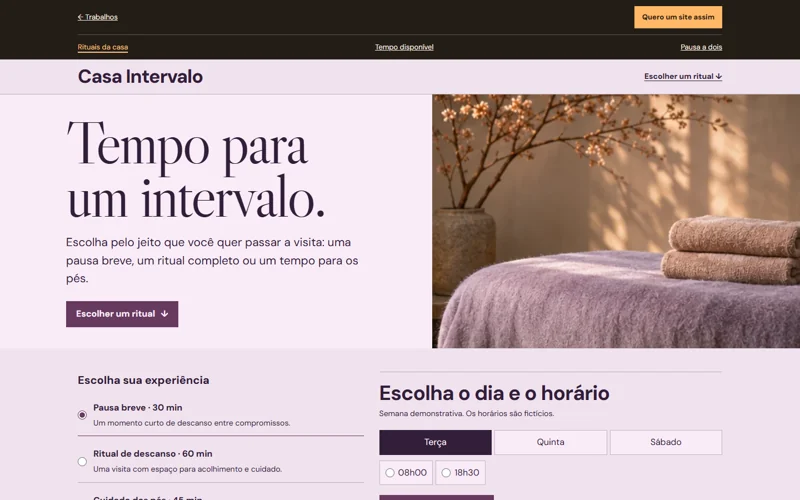
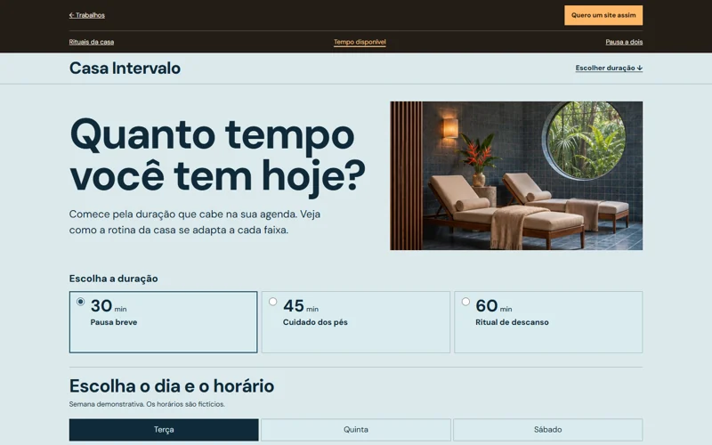
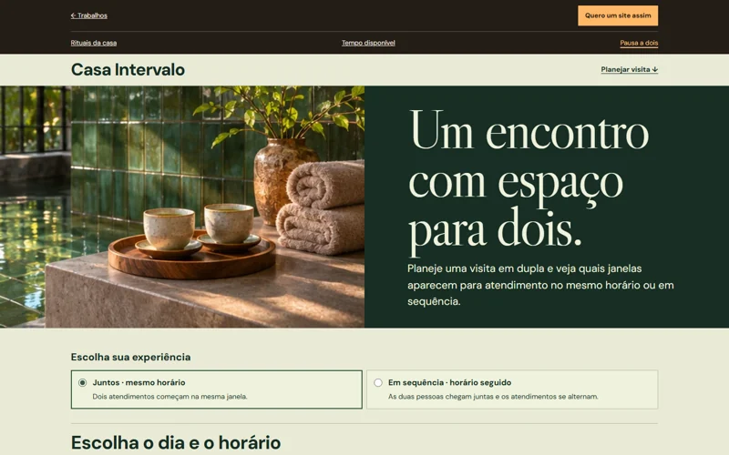

Casa Intervalo
Três maneiras de organizar uma visita · Spa urbano

Rituais da casa
Escolha pelo jeito que você quer passar a visita: uma pausa breve, um ritual completo ou um tempo para os pés.

Tempo disponível
Comece pela duração que cabe na sua agenda. Veja como a rotina da casa se adapta a cada faixa.

Pausa a dois
Planeje uma visita em dupla e veja quais janelas aparecem para atendimento no mesmo horário ou em sequência.